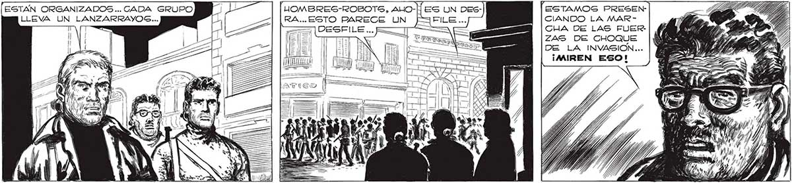

ZH 262 [ESTAN ORGANIZADOS... CADA GRUPO ¡ Y JOMBRES-ROBOTS, ALO- ESTAMOS PRESEN- MV o, 7 RA... ESTO PARECE UN CIANDO LA MAR- | | == DESFILE... == ÁÚ=A E= ] CHA DE LAS FUER| Ñ ZAS DE GHOQUE DE LA INVASION... ¡MIREN ESO! Tras LOS HOMBRES-ROBOTS AVANZO UNA EXTRAÑA LENTEJA, ERDENTRO IBA UN “MANO”, EL DIRECTOR ¿0% ANTAD METAL, MITAD PLÁSTICO TRANGRARENTE - —< A [FVODENTEMENTE, DE AQUELLA UNIDAD DE Me Ññ Y rs | | | L | | — A | po [a o — | IAE E a A] — NN Sd h > Ñ SI == o 3 EA 3 aca] 0 Una veinTena DE “GURSOS" , : = Pi "=5ÁQUE AVANZABAN RESQUEBRAQUE JAMAS CONTO GE- = 570,0 /”>=JANDO EL PAVIMENTO, ESTREME= NERAL ALGUNO... ——— [24 AVANDIA SS MH y CIENDO TODO A SU PASO. —4L_ 'S 7 PV p y PSA Pe) )
